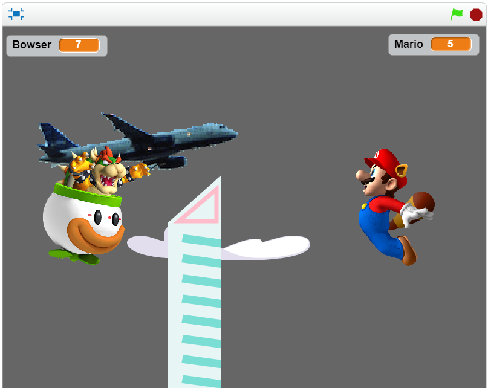
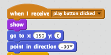
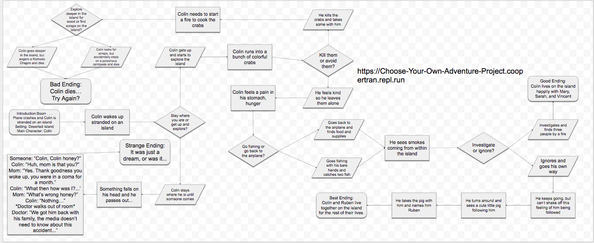

EPIC 1V1 SIMULATOR
Game Link
Description
This is a one versus one simulator that can only be played by two people.
It is Bowser vs. Mario, which is a common theme in the Mario games.
The scoring system consists of lives, when one player runs out of lives, they lose. the randomness in the game occurs with the airplane in the background. The airplane is randomly spawned, and when a player touches the plane, they gain a life. The game becomes harder when the other player receives extra lives, giving them an advantage.
Reflection
Cooper and I originally wanted to create a two-player game because we thought it would be original and fun. We were inspired by Mortal Kombat, and we wanted to make a game similar to it. Two successful points in our project were the scoring system and the playability. In the game, the scoring system worked very well, and whenever a character was hit by a projectile, it lost a life. In addition, there were little to no glitches in the game, which made it very playable. One obstacle Cooper and I faced while developing "Epic 1v1 Simulator" was the layering of the home and help screen. Additionally, we hard a hard time trying to find a way to make the game increase in difficulty, but we found out that an object could give a character extra lives, providing an advantage. If we had more time, we would make the game more aesthetically pleasing, and add more abilities to Bowser and Mario.
Algorithm
This algorithm is essential because it shows and moves the sprite to the designated location when the play button is clicked. Without this algorithm,the sprite would be invisible, making the game unplayable. A screenshot of the algorithm is shown below.
More Blocks
This more blocks function shows the welcome screen while playing the lobby music.

STRANDED.
STRANDED stars the protagonist Colin, when he is stranded on an island from a plane crash. It showcases the struggles and choices he has to make on the island. The story has multiple endings, depending on what the player makes Colin do.
Cooper and I started coding our game by using the flowchart as a guideline. We used and edited the story from the flowchart aalong the way nd implemented it into the code so that it would output the words and choices. We ran into some problems with output, sometimes the program would not output anything, just blank. We resolved this by removing some unneeded code. I helped to develop and code the story, while suggesting new storylines, outcomes, and choices along the way.
Because the code can work without the user knowing how it works, organizing scenes into functions is an example of procedural obstruction. This method separates the code into different, easier to manage, parts. As a result, the code only needs to be fixed in a single place, so it is easier to test out than other codes.
One story I enjoyed was "Ziggy's", because it was funny. Another story I enjoyed was "DEV.AI", for it was very detailed and intricate.